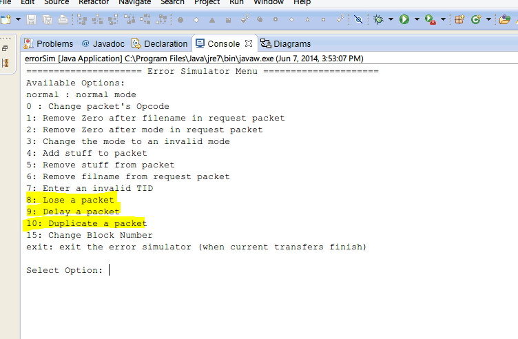
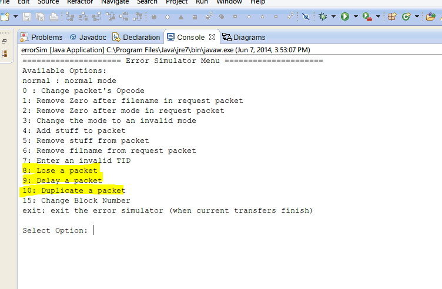
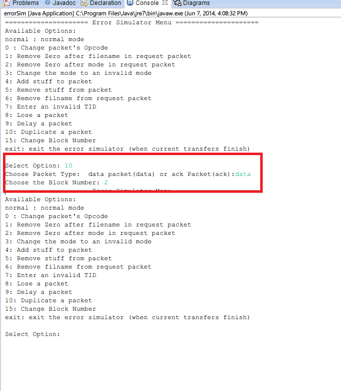
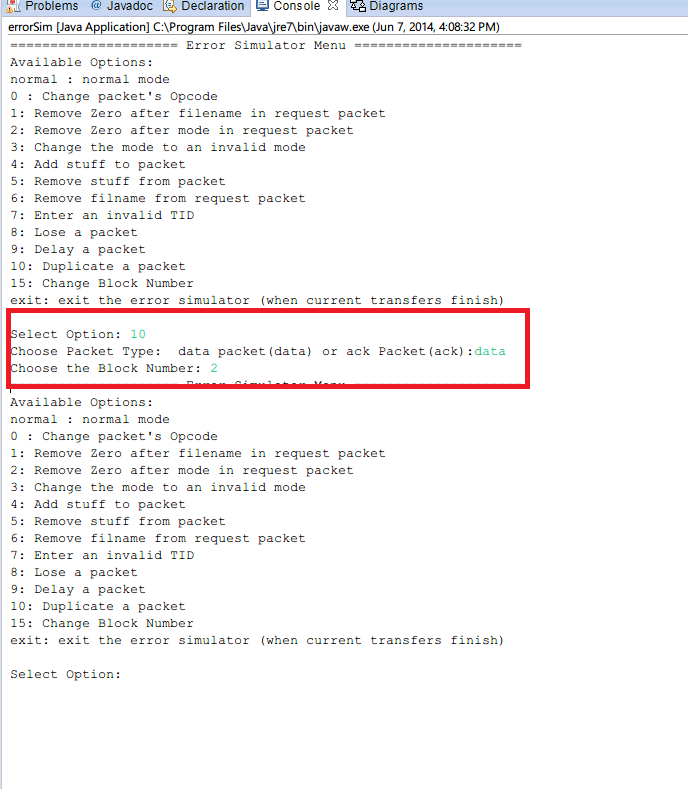

Testing Iteration 2
Lost, Delayed and Duplicated Packets
- Run Server.java file. Press enter to use the default (server-files) folder
- Run errorSim.java file. For Iteration 2, you can pick the highlighted options.
- You can test any of the following cases using their respective steps. It is important to restart errorSim.java each time for clarity and to reset the settings, and also recommended you delete the files from the target folder.
- Duplicate Packets
- in the errorSim.java console, type "10" and press enter
- You will be asked to specify whether you wish to duplicate ACK or DATA packet. Select either by typing 'ack' or 'data' and press enter.
- You will now be asked to specify the block you wish to duplicate, type an integer in and press enter.
- Skip to Step #4 and run the Client.java file
- Testing Delayed Packets
- in the Error Simulator console, type '9' and press enter to select Delaying packets
- You will be asked to specify whether you wish to duplicate ACK or DATA packet. Select either by typing 'ack' or 'data' and press enter.
- You will now be asked to specify the block you wish to duplicate, type an integer in and press enter. Note: I have ommited an image here to reduce submission size, simply refer to the example image above. Everything is identical except in this case, you entered '9'.
- Skip to Step #4 and run the Client.java file
- Testing Lost Packets
- in the Error Simulator console, type '8' and press enter to select Lose packets
- You will be asked to specify whether you wish to duplicate ACK, DATA, or REQUEST packet. Select either by typing 'ack' or 'data' or 'request' and press enter.
- IF you selected Data or ACK, You will now be asked to specify the block you wish to duplicate, type an integer in and press enter. Note: I have ommited an image here to reduce submission size, simply refer to the example image above. Everything is identical except in this case, you entered '9'.
- Skip to Step #4 and run the Client.java file
- Run Client.java file as per normal
- Enter either "read loremServer.txt" or "write loremClient.txt" ENSURE File you chose does not exist on target side. Below we have shown what happened in the case of Example 1. We have chosen 'read loremserver.txt' in the scenario shown below
From this document page onwards, it will be assumed that the project has been imported in eclipse and setupTestFiles.java has been run at least once. If you have not done so, click this link to do so.
It was a MUST that you have followed the Normal Operation procedure because the steps of running the files in a sequence have been omited. This also allows you to have a control to test against. Simply click "Previous Content" link from the above menu
Available options to test for Iteration 2

Click to Enlarge

{kind=link}
Click to Enlarge
Summary of above steps

Click to Enlarge

{kind=link}
Click to Enlarge
Below is a fragment of the Client console output after you complete the entire test (after doing Step 4 and onwards)
Select Option: read loremserver.txt Current Thread: 1 Connection on Port: 64214 Current Thread: 1 Setting REMOTE TID to: 64215 Current Thread: 1 Received DATA BLK # : 1 Current Thread: 1 Sent ACK BLK # : 1 Current Thread: 1 Received DATA BLK # : 2 Current Thread: 1 Sent ACK BLK # : 2 Current Thread: 1 Sent ACK BLK # : 2 as a response to duplicate DATA Current Thread: 1 Waiting to receive DATA #3 timed out, trying again. Current Thread: 1 Waiting to receive DATA #3 timed out, trying again. Current Thread: 1 Received DATA BLK # : 3 Current Thread: 1 Sent ACK BLK # : 3 Current Thread: 1 Received DATA BLK # : 4 Current Thread: 1 Sent ACK BLK # : 4 Current Thread: 1 Received DATA BLK # : 5 Current Thread: 1 Sent ACK BLK # : 5 Current Thread: 1 Received DATA BLK # : 6 ....
Summary of above steps

Click to Enlarge
Click to Enlarge
Below is a fragment of the Client console, when a request packet was lost
Select Option: read loremserver.txt Current Thread: 1 Connection on Port: 53538 Current Thread: 1 Waiting to receive DATA #1 timed out, trying again. Current Thread: 1 Resending final transfer packet. Current Thread: 1 Setting REMOTE TID to: 53539 Current Thread: 1 Received DATA BLK # : 1 Current Thread: 1 Sent ACK BLK # : 1 Current Thread: 1 Received DATA BLK # : 2 Current Thread: 1 Sent ACK BLK # : 2 ....